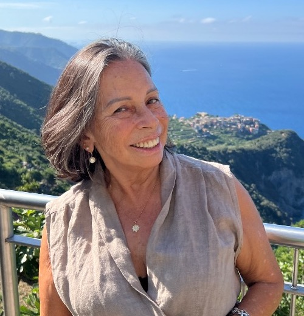

40 años de experiencia profesional dedicados a devolver la función, armonía y salud a tu sonrisa, con atención cálida y personalizada.
Corrientes y Buenos Aires
Atención con turno previo
✨ Consultá disponibilidad de turnos en Corrientes y Buenos Aires.
Tratamientos integrales enfocados en la función masticatoria, la salud articular y la armonía de tu sonrisa.
Restauración integral de las piezas dentarias y devolución de la función masticatoria mediante prótesis fijas, coronas y rehabilitaciones orales completas de alta precisión.
Diseño y armonización de la sonrisa cuidando la naturalidad, el color y la estructura dental mediante restauraciones estéticas y tratamientos conservadores.
Diagnóstico y tratamiento del equilibrio de la mordida, bruxismo y trastornos de la articulación temporomandibular (ATM) para lograr estabilidad funcional y sin dolor.

Odontóloga (M.N. 398901) • Título Oficial Homologado de Licenciada en Odontología en España
Con 40 años de ejercicio profesional y experiencia clínica tanto en Argentina como en España, cuenta con la Credencial de Homologación al título universitario oficial español de Licenciada en Odontología, habilitante para el ejercicio profesional de la odontología en España.
"Mi compromiso ha sido siempre que cada paciente se sienta tranquilo, escuchado y en confianza. Explico cada diagnóstico con claridad y trabajo con dedicación para lograr resultados funcionales, estéticos y duraderos."
Comunicate por WhatsApp o teléfono para coordinar tu consulta.
Corrientes y Buenos Aires (Argentina)
Matrícula Nacional Argentina: 398901
Licenciada en Odontología (Título Oficial Homologado en España)
Enviá un mensaje directo por WhatsApp o llamanos por teléfono. Te responderemos a la brevedad para coordinar el día y horario de tu consulta en Corrientes o Buenos Aires.
💬 Enviar mensaje por WhatsApp 📞 Llamar al 3794 779260